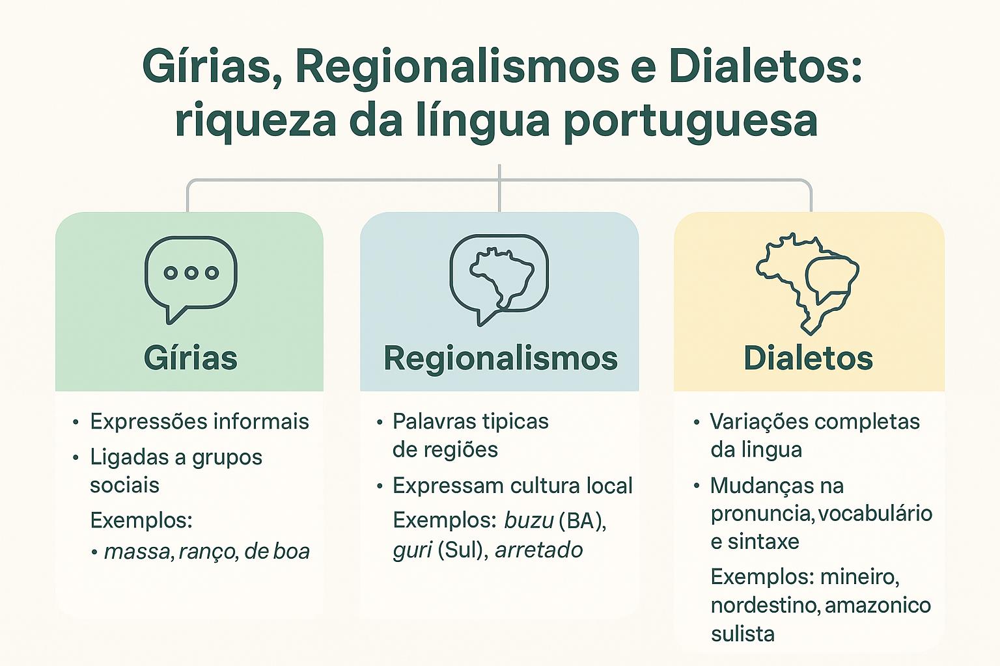

Gírias, regionalismos e dialetos: diferenças, exemplos e diversidade linguística
Gírias, regionalismos e dialetos são manifestações da diversidade linguística. Eles mostram como os usos do português se relacionam com os lugares, as experiências e os grupos de convivência dos falantes.
Embora esses conceitos estejam relacionados, eles não são equivalentes. Uma gíria pode marcar proximidade entre pessoas; um regionalismo pode ter maior presença em determinada localidade; um dialeto envolve um conjunto mais amplo de características linguísticas.

O que são gírias?
As gírias são palavras ou expressões associadas a usos informais e a formas de identificação entre falantes. Podem circular em grupos de amigos, comunidades de interesse, ambientes profissionais e diferentes gerações.
Algumas permanecem ligadas a grupos específicos; outras passam a ser conhecidas por um público mais amplo. Seu uso pode expressar pertencimento, humor, avaliação ou proximidade.
Exemplos de gírias em contexto
- “Estou de boa.” — pode indicar tranquilidade ou ausência de preocupação.
- “O passeio foi massa.” — “massa” funciona como uma avaliação positiva.
- “Peguei ranço dessa série.” — “ranço” expressa antipatia ou aversão nesse uso.
O significado depende do contexto. Em “a massa do pão cresceu”, por exemplo, “massa” não apresenta o mesmo uso de “o passeio foi massa”.
As gírias mudam com o tempo?
Sim. Expressões podem perder frequência, adquirir novos sentidos ou deixar de ser percebidas como marcas de um grupo restrito. Uma gíria familiar a uma geração pode soar pouco usual para outra.
Isso não significa que toda gíria seja passageira. Algumas permanecem em circulação por muito tempo, enquanto outras têm alcance mais limitado.
O que são regionalismos?
Os regionalismos são palavras, expressões ou sentidos que apresentam uma distribuição geográfica particular, com maior presença em determinadas localidades ou comunidades.
Eles podem estar relacionados à alimentação, ao trabalho, às relações de convivência e a práticas culturais. Muitas vezes, diferentes palavras são usadas para designar referentes semelhantes.
Exemplos de regionalismos
- “Guri”: palavra para menino ou jovem, frequentemente associada a usos do Sul do Brasil.
- “Arretado”: expressão associada a falares nordestinos, com sentidos que variam conforme o contexto, incluindo uma avaliação positiva.
- “Buzu”: denominação informal de ônibus, conhecida em usos da Bahia, especialmente de Salvador.
Essas associações não indicam exclusividade. Uma palavra pode circular fora da região à qual costuma ser vinculada. Também não se deve presumir que todos os moradores de um lugar utilizem as mesmas expressões.
Uma gíria pode ser também um regionalismo?
Sim. As classificações destacam aspectos diferentes e podem se sobrepor. Uma expressão pode ter circulação informal entre certos grupos e, ao mesmo tempo, apresentar maior frequência em uma região.
Por isso, a análise deve indicar qual aspecto está em destaque: a distribuição geográfica, a identificação social ou a situação comunicativa.
O que são dialetos?
Em sentido linguístico, um dialeto é uma variedade de uma língua que pode apresentar particularidades de pronúncia, vocabulário e organização gramatical.
O termo não significa uma língua “inferior”, incompleta ou sem regras. Ele permite descrever conjuntos de características compartilhadas por comunidades de falantes.
- Pronúncia: modos de realizar sons, ritmos e entonações.
- Vocabulário: palavras, expressões e sentidos recorrentes.
- Gramática: padrões de uso de pronomes, concordância e construção das frases.
Os limites dos dialetos coincidem com os estados?
Não necessariamente. As características linguísticas podem atravessar fronteiras administrativas e variar dentro de um mesmo estado, município ou bairro.
Expressões como “falar mineiro” ou “falar nordestino” podem funcionar como referências gerais no cotidiano, mas abrangem uma diversidade interna que precisa ser considerada.
Para descrever uma variedade, é necessário observar vários usos e suas relações. Uma única palavra não define todo um dialeto.
Qual é a diferença entre dialeto e sotaque?
O sotaque se refere principalmente às características de pronúncia e entonação. O dialeto é um conceito mais amplo, que também pode envolver vocabulário e gramática.
Exemplo: diferentes realizações do “r” em “porta” dizem respeito à pronúncia. Diferenças no emprego de pronomes de tratamento ou em padrões de concordância envolvem outros aspectos da variedade linguística.
Todos os falantes apresentam características de pronúncia. A impressão de que alguém “não tem sotaque” geralmente está relacionada à familiaridade do ouvinte com aquela maneira de falar.
Gíria e jargão são a mesma coisa?
Não. O jargão é um vocabulário especializado empregado em determinada área de atividade. Ele pode facilitar a comunicação entre pessoas que compartilham conhecimentos técnicos.
- Na medicina: “diagnóstico” e “prognóstico” integram um vocabulário especializado.
- Na informática: “compilação” e “depuração” possuem sentidos técnicos.
- Na gramática: “predicativo” e “transitividade” nomeiam conceitos de análise linguística.
Um grupo profissional também pode empregar gírias, mas nem todo termo técnico é uma gíria. A função da expressão e o contexto ajudam a distinguir os casos.
Comparação entre os conceitos
| Conceito | Aspecto em destaque | Exemplo |
|---|---|---|
| Gíria | Uso informal e identificação entre falantes. | “Estou de boa.” |
| Regionalismo | Distribuição geográfica de uma palavra ou expressão. | “Guri” para menino, em certos usos regionais. |
| Dialeto | Conjunto de características de uma variedade. | Padrões de pronúncia, vocabulário e gramática compartilhados por uma comunidade. |
| Sotaque | Pronúncia, ritmo e entonação. | Diferentes realizações do “r” em “porta”. |
| Jargão | Vocabulário especializado de uma atividade. | “Depuração”, na informática. |
Como essas formas se relacionam à variação linguística?
Gírias, regionalismos e dialetos podem ser estudados considerando diferentes fatores de variação:
- Regional ou diatópico: diferenças relacionadas às localidades e às comunidades.
- Social ou diastrático: diferenças relacionadas aos grupos e às redes de convivência.
- Histórico ou diacrônico: transformações observadas ao longo do tempo.
- Situacional ou diafásico: escolhas relacionadas ao contexto, aos interlocutores e ao objetivo da comunicação.
Esses fatores podem atuar juntos. Uma expressão pode ter origem regional, circular entre determinados grupos e ser empregada principalmente em situações informais.
Cultura, identidade e pertencimento
As escolhas linguísticas podem expressar vínculos com lugares, gerações, profissões e comunidades. Uma palavra conhecida entre familiares pode evocar lembranças; uma gíria compartilhada pode reforçar a proximidade entre amigos.
Isso não torna a identidade de uma pessoa fixa. O mesmo falante participa de diferentes ambientes e pode ajustar sua maneira de se expressar conforme as relações que estabelece.
Além disso, uma variedade pode receber maior ou menor prestígio social. Esse julgamento não deve ser confundido com uma suposta superioridade linguística de seus falantes.
Internet e circulação das expressões
Mensagens, vídeos, jogos e outras interações digitais colocam falantes de diferentes lugares em contato. Nesses ambientes, expressões podem ser retomadas, receber novos sentidos e alcançar públicos que antes não as conheciam.
Uma expressão difundida na internet não precisa ter surgido nela. É importante distinguir origem, popularização e mudança de sentido.
Abreviação é sempre gíria?
Não. Formas como “vc”, em determinadas mensagens, representam abreviações gráficas. Já uma palavra usada com um sentido informal compartilhado por um grupo pode funcionar como gíria.
Esses recursos podem aparecer juntos, mas correspondem a fenômenos diferentes. Também precisam ser analisados conforme o gênero e a situação de uso.
Gírias e regionalismos podem ser usados em qualquer texto?
A escolha depende da adequação linguística: quem escreve ou fala precisa considerar o público, a finalidade e as convenções do gênero.
- Conversa entre amigos: gírias compartilhadas podem contribuir para a proximidade.
- Texto literário: expressões regionais podem construir vozes, cenários e relações entre personagens.
- Divulgação científica: termos especializados podem precisar de explicação para leitores não especialistas.
- Documento formal: expressões muito restritas a um grupo podem dificultar a compreensão do público.
Em uma redação escolar formal, por exemplo, convém avaliar se a expressão contribui para a argumentação e atende às orientações da atividade. Uma gíria também pode aparecer como objeto de análise ou em uma citação devidamente contextualizada.
Norma-padrão e respeito à diversidade
A norma-padrão é um modelo de referência codificado em gramáticas e convenções, utilizado como orientação em muitas situações formais. Ela não corresponde integralmente à fala cotidiana de um único grupo.
Aprender essas convenções amplia as possibilidades de participação em práticas escolares, acadêmicas e profissionais. Esse aprendizado é compatível com o reconhecimento das variedades que o estudante já conhece.
Também é necessário distinguir uma orientação de revisão de um julgamento sobre a pessoa. Explicar uma convenção exigida por determinado gênero é diferente de humilhar alguém por seu sotaque ou por suas expressões.
Preconceito linguístico
O preconceito linguístico ocorre quando uma maneira de falar é usada para desvalorizar seus falantes. Ele pode envolver a associação de um sotaque ou de uma variedade à falta de inteligência, à incapacidade ou à inferioridade social.
Na entrevista indicada ao final desta página, o Museu da Língua Portuguesa discute como a desvalorização das variedades se relaciona a preconceitos dirigidos aos próprios grupos sociais.
Como evitar atitudes discriminatórias
- Não transformar sotaques em motivo de humilhação;
- Evitar generalizações sobre a fala de regiões inteiras;
- Não deduzir a inteligência de alguém por uma expressão;
- Explicar convenções formais com critérios claros;
- Considerar o contexto antes de avaliar uma escolha linguística.
Como analisar esses usos em questões de prova
- Identifique a expressão: observe a palavra, o sentido ou a pronúncia representada.
- Examine o contexto: considere quem fala, com quem e com qual objetivo.
- Reconheça o aspecto destacado: localização, grupo, especialização técnica ou pronúncia.
- Analise o efeito de sentido: proximidade, pertencimento, caracterização ou humor, por exemplo.
- Justifique com elementos do texto: evite classificações baseadas apenas em estereótipos.
Exercícios com gabarito comentado
1. Regionalismo
Em uma narrativa, a palavra “guri” é analisada por sua presença em determinados falares do Sul do Brasil. Qual aspecto está em destaque?
- A) A distribuição geográfica do vocabulário.
- B) A ausência de regras na fala.
- C) O uso obrigatório de termos técnicos.
- D) A inferioridade de uma variedade.
2. Dialeto e sotaque
Assinale a afirmação adequada:
- A) Dialeto é uma maneira incompleta de falar uma língua.
- B) Sotaque e dialeto são sempre conceitos idênticos.
- C) Sotaque envolve principalmente a pronúncia; dialeto pode envolver também vocabulário e gramática.
- D) Apenas pessoas de algumas regiões possuem sotaque.
3. Gíria e contexto
Em “a apresentação foi massa”, a palavra destacada expressa uma avaliação positiva e informal. Já em “a massa do pão cresceu”, ela designa uma preparação culinária. A comparação mostra que:
- A) Uma palavra mantém o mesmo sentido em qualquer situação.
- B) O contexto participa da interpretação de seus sentidos.
- C) Toda palavra com mais de um sentido é um regionalismo.
- D) Gírias aparecem somente em textos falados.
4. Vocabulário especializado
Uma equipe de informática utiliza “depuração” para se referir à identificação e à correção de falhas em um programa. Nesse contexto, o termo integra:
- A) Um sotaque.
- B) Uma abreviação gráfica.
- C) Uma expressão necessariamente regional.
- D) Um vocabulário técnico ou jargão profissional.
5. Diversidade e ensino
Qual atitude concilia ensino e respeito à diversidade?
- A) Proibir qualquer expressão regional em todas as situações.
- B) Associar sotaques à capacidade intelectual dos estudantes.
- C) Ensinar convenções formais e explicar em quais contextos elas são exigidas.
- D) Considerar desnecessário conhecer diferentes registros.
Confira o gabarito comentado
- A. A questão destaca a distribuição geográfica de uma palavra, aspecto relacionado ao regionalismo.
- C. O conceito de dialeto é mais amplo que o de sotaque e pode abranger diferentes níveis da língua.
- B. As relações entre as palavras e a situação de uso permitem reconhecer sentidos diferentes.
- D. “Depuração” nomeia um procedimento especializado da área de informática.
- C. Ampliar o repertório dos estudantes não exige desvalorizar suas variedades de origem.
Perguntas frequentes
Qual é a diferença entre gíria e regionalismo?
A gíria está associada a usos informais e à identificação entre grupos. O regionalismo se destaca por sua distribuição geográfica. Uma mesma expressão pode apresentar as duas características.
Dialeto e sotaque são a mesma coisa?
Não. Sotaque se refere principalmente à pronúncia e à entonação. Dialeto é uma variedade linguística que pode apresentar particularidades de pronúncia, vocabulário e gramática.
Gírias podem aparecer em textos escritos?
Sim. Elas podem aparecer em mensagens, diálogos literários, anúncios e outros textos. Sua adequação depende do gênero, do público e da finalidade da comunicação.
Existe uma variedade linguística sem sotaque?
Não existe uma fala linguisticamente neutra, sem características de pronúncia. O que parece ausência de sotaque costuma corresponder a uma pronúncia familiar ao ouvinte ou socialmente tomada como referência.
Resumo sobre gírias, regionalismos e dialetos
- Gírias estão associadas à informalidade e à identificação entre falantes.
- Regionalismos apresentam uma distribuição geográfica particular.
- Dialetos podem envolver pronúncia, vocabulário e gramática.
- Sotaques dizem respeito principalmente à pronúncia e à entonação.
- Jargões reúnem vocabulário especializado de áreas de atividade.
- Essas características podem se sobrepor e variar conforme o contexto.
- Respeitar a diversidade é compatível com ensinar convenções formais.
Conteúdos relacionados
Continue estudando os usos e a diversidade da língua portuguesa:
Para aprofundar o estudo
Explore outros conteúdos
Continue seus estudos acessando outras seções do site Mestre Kira: